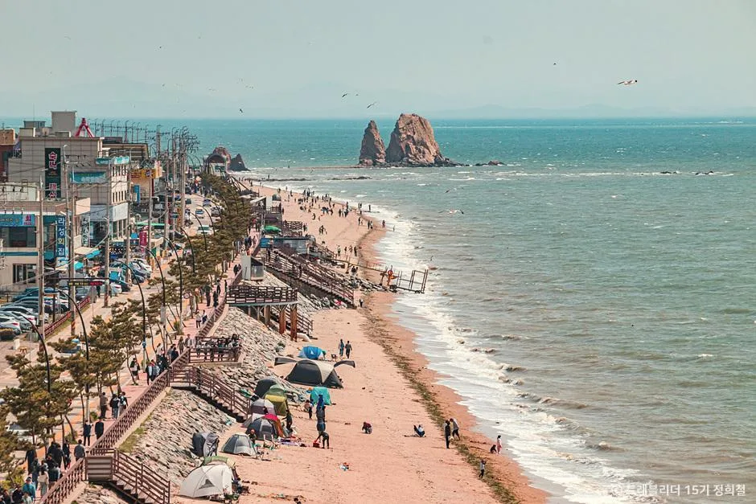
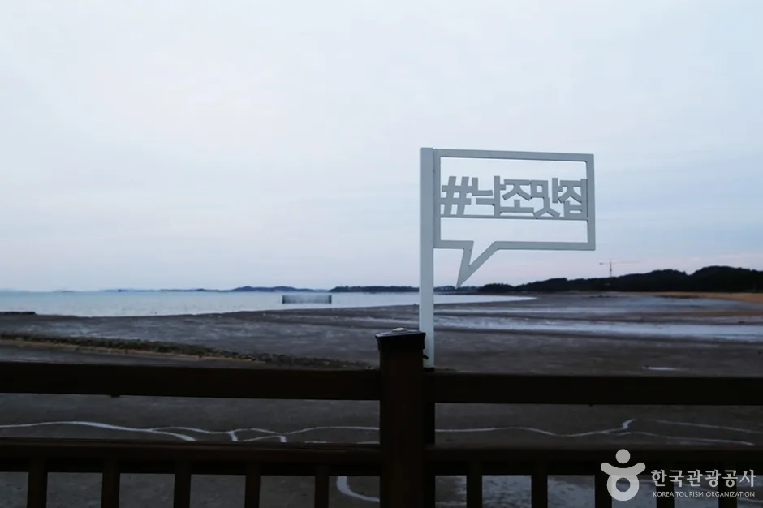
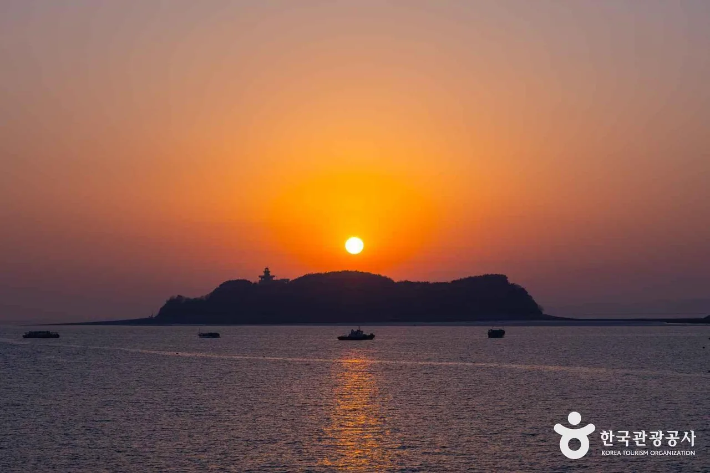
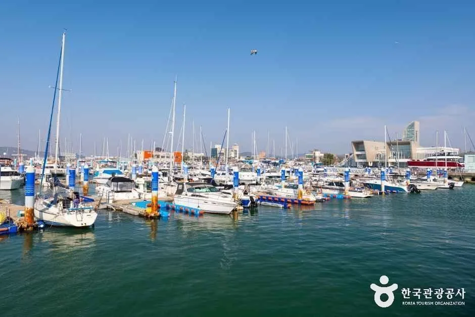

▲ 물이 빠진 제부도 바닷길. 이 길은 하루 두 번만 모습을 드러낸다
국내에 하루 두 번 사라지는 도로가 있습니다. 경기 화성시 서신면에서 제부도로 들어가는 약 2.3km 구간입니다.
비유가 아니라 물리적으로 사라집니다. 밀물이 들어오면 아스팔트 위로 바닷물이 올라오고, 그 시간에는 차가 지나갈 수 없습니다. 내비게이션은 이 도로를 평범한 지방도처럼 안내합니다. 몇 시에 잠기는지는 알려주지 않습니다.
1. 하루 두 번만 열리는 2.3km
제부도는 섬이지만 다리가 없습니다. 대신 갯벌 위에 도로를 냈습니다. 물이 빠지면 그 도로가 드러나고, 물이 차면 잠깁니다. 흔히 "모세의 기적"이라고 부르는 그 길입니다.

▲ 제부도 해변. 섬 자체는 둘레 약 5km로 크지 않다 ⓒ 대한민국 구석구석(한국관광공사)
열리는 시간은 매일 다릅니다. 조수는 달의 주기를 따르기 때문에 간조 시각이 날마다 약 50분씩 밀립니다. 지난주에 오후 2시에 열렸다고 이번 주 같은 요일에도 그럴 것이라 가정하면 안 됩니다.

▲ 물이 빠진 갯벌. 이 상태일 때만 바닷길이 열려 있다 ⓒ 대한민국 구석구석(한국관광공사)
통행 가능 시간은 간조 전후 2~3시간입니다. 하루에 두 번 열리지만, 그중 한 번은 새벽이나 심야에 걸리는 날이 많습니다. 실질적으로 낮에 쓸 수 있는 창은 하루 한 번인 경우가 흔합니다.
📍 물때는 어디서 보나
화성시 관광 홈페이지와 제부도 관련 안내처가 바닷길 통행 시간을 공지합니다. 국립해양조사원 조석 예보도 기준이 됩니다. 중요한 것은 들어가는 시각과 나오는 시각을 모두 확인하는 일입니다. 들어갈 때 열려 있어도, 섬에서 두세 시간 머무는 사이에 닫히면 다음 간조까지 갇힙니다.
2. 못 맞추면 실제로 어떻게 되나
양쪽 끝에 통제소가 있습니다. 육지 쪽 송교리와 섬 쪽 제부도에 각각 있고, 침수 시간이 되면 바리케이드로 진입을 막습니다. 시스템 자체는 갖춰져 있습니다.
문제는 마감 직전입니다. 통제 직전에 밀고 들어갔다가 중간에 물이 차오르면 빠져나올 방법이 없습니다. 차량이 통째로 침수되는 사고가 실제로 반복돼 왔습니다. 2.3km는 짧아 보이지만, 시속 40km로 달려도 3분 이상 걸리고 앞차가 서행하면 그보다 오래 걸립니다.

▲ 해가 지는 시각과 물때가 겹치면 판단이 더 어려워진다 ⓒ 대한민국 구석구석(한국관광공사)
침수된 차는 보험 처리도 간단하지 않습니다. 통제를 무시하고 진입한 정황이 확인되면 자기차량손해 보상에서 다툼이 생길 수 있습니다. "통제소 직원이 막았는데 지나갔다"는 기록이 남으면 더 그렇습니다.
| 순서 | 확인 내용 |
|---|---|
| 1 | 오늘 간조 시각 — 들어가는 시간대 |
| 2 | 다음 만조 시각 — 나와야 하는 시각 |
| 3 | 섬에서 머물 시간이 그 사이에 들어가는지 |
| 4 | 통제소 안내 — 현장 지시가 최우선 |
| 5 | 못 맞추면 전곡항 해상케이블카 등 대안 |
대안도 있습니다. 전곡항과 제부도를 잇는 서해랑 해상케이블카는 해상 구간이 2.12km로 국내에서 가장 깁니다. 물때를 놓쳤다면 차를 육지에 두고 케이블카로 건너는 선택지가 남습니다.
3. 6월에 열린 17km, 황금해안길
이 일대에 새 길이 생겼습니다. 화성 황금해안길은 2026년 6월 26일 임시 개통했습니다. 제부도 쪽에서 궁평항까지 총 17km를 잇습니다.

▲ 궁평항. 황금해안길의 종점이자 2008년 지정된 국가어항이다 ⓒ 대한민국 구석구석(한국관광공사)
구성은 세 구간입니다. 1구간 낙조경관길이 제부마리나에서 송교리까지 5.0km(도보 약 70분), 2구간 소금바다길이 송교리에서 공생염전까지 4.5km(약 70분), 3구간 궁평관광길이 공생염전에서 궁평항까지 7.5km(약 100분)입니다.
| 구간 | 명칭 | 거리 | 도보 소요 |
|---|---|---|---|
| 1구간 | 낙조경관길 | 5.0km (제부마리나~송교리) | 약 70분 |
| 2구간 | 소금바다길 | 4.5km (송교리~공생염전) | 약 70분 |
| 3구간 | 궁평관광길 | 7.5km (공생염전~궁평항) | 약 100분 |
전체가 걷는 길은 아닙니다. 17km 중 해안데크가 약 4.4km이고, 나머지 12.6km는 해안 경관도로입니다. 차로 이동하며 중간중간 데크 구간만 걸어 붙이는 방식이 현실적입니다.

▲ 전곡항 마리나. 황금해안길과 해상케이블카가 만나는 지점이다 ⓒ 대한민국 구석구석(한국관광공사)
4. 2구간은 5시 30분에 닫힌다
물때 말고 또 하나의 시계가 있습니다. 2구간 소금바다길의 일부 해안데크는 군사 보안상 평일 오후 5시 30분 이후 통행이 제한됩니다. 화성시가 안내에 명시하고 있는 조건이고, 이 시간 이후에는 지정된 우회도로를 이용해야 합니다.
이 조합이 이 코스의 난도를 만듭니다. 1구간은 물때에 묶이고, 2구간은 시각에 묶입니다. 낙조를 보려고 늦은 오후에 출발하면 2구간이 닫히고, 2구간을 여유 있게 보려고 이른 오후에 움직이면 물때가 안 맞을 수 있습니다.
▲ 서신면과 궁평항 일대는 해산물 식당이 밀집해 있다 ⓒ 대한민국 구석구석(한국관광공사)
순환버스도 운행합니다. 황금해안01·02 순환버스가 다니므로, 구간마다 차를 옮기는 대신 한 곳에 주차하고 버스로 이동하는 조합이 가능합니다. 차를 어디에 두느냐가 동선의 핵심이 됩니다.
5. 차를 어디에 세울 것인가
화성시는 공영주차장 이용을 권장합니다. 특히 1구간은 제부도 바닷길 통행과 얽혀 있어, 섬 안에 차를 넣었다가 물때에 발이 묶이는 상황을 피하려면 육지 쪽에 두는 편이 안전합니다.
▲ 제철에는 굴과 바지락을 쓴 향토 음식이 나온다 ⓒ 대한민국 구석구석(한국관광공사)
주차 전략은 목적에 따라 갈립니다. 섬을 목적지로 삼는다면 물때 안에 왕복을 끝내는 계획이 필요하고, 해안길 트레킹이 목적이라면 궁평항이나 전곡항 쪽에 거점을 두고 순환버스로 움직이는 편이 낫습니다.
| 목적 | 권장 거점 | 유의점 |
|---|---|---|
| 제부도 방문 | 육지 측(송교리 일대) | 물때 안에 왕복 완료 |
| 해안데크 트레킹 | 궁평항 공영주차장 | 순환버스로 구간 이동 |
| 낙조 감상 | 궁평항 | 2구간 17:30 제한 회피 |
| 케이블카 이용 | 전곡항 | 물때 무관 — 대안 루트 |
6. 하루 동선은 이렇게 짜면 된다
순서를 뒤집는 것이 요령입니다. 보통은 목적지를 정하고 시간을 맞추지만, 이 지역은 물때를 먼저 확인하고 그다음에 순서를 정하는 편이 안전합니다.
간조가 오전이라면 제부도를 먼저 넣고, 나온 뒤 오후에 2구간과 궁평항 낙조로 이어 붙입니다. 간조가 오후 늦게라면 순서를 뒤집어 궁평항·3구간을 먼저 돌고 마지막에 섬으로 들어가되, 나오는 시각까지 계산해야 합니다.
평일과 주말도 다릅니다. 2구간 통행 제한은 평일 기준으로 안내되고 있으므로, 주말 방문이라면 이 변수 하나는 줄어듭니다. 대신 주차 경쟁이 올라갑니다.
정리하면 이렇습니다. 이 코스에는 시계가 두 개 있습니다. 하나는 달이 정하는 물때이고, 다른 하나는 군이 정한 오후 5시 30분입니다. 둘 다 내비게이션에는 뜨지 않습니다. 출발 전에 조석표를 한 번 보는 것만으로 대부분의 사고는 피할 수 있습니다.